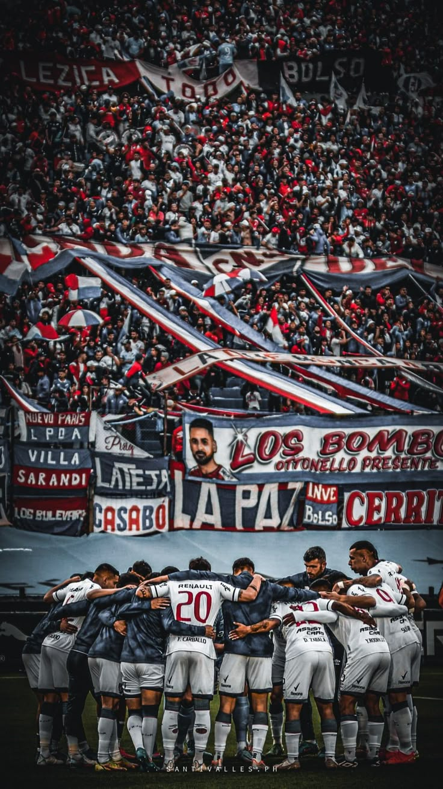

La historia del club nacional de football |
|
|  |
La mejor y significativa historia de todo america |
|
El Club Nacional de Football es un club polideportivo uruguayo fundado el 14 de mayo de 1899 en Montevideo. Es uno de los equipos más laureados y reconocidos del país, con 49 títulos de Campeón Uruguayo y 3 Copas Libertadores (1971, 1980, 1988) y 3 Copas Intercontinentales (1971, 1980, 1988). Juega sus partidos de local en el Estadio Gran Parque Central, el estadio más antiguo de América que además fue sede de la primera Copa Mundial de la FIFA. Sus colores son el blanco, azul y rojo, en honor a la bandera de Artigas. |
|